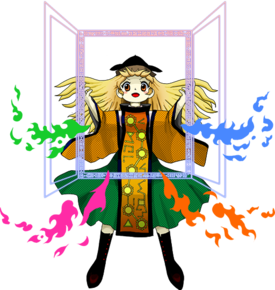
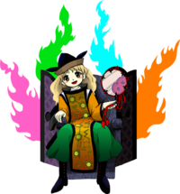
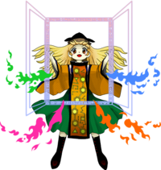

- Welcome to Touhou Wiki!
- Please register to edit. For assistance, check in with our Discord server or IRC channel.
Okina Matara
Okina Matara | |
|---|---|
|
 Okina Matara as the Extra Stage Boss of Hidden Star in Four Seasons The Ultimate, Absolute Secret GodMore Character Titles | |
| Species |
Secret God |
| Abilities |
Creating doors on the back of anything |
| Age |
Older than Gensokyo itself |
| Occupation |
Sage; maintains Gensokyo's balance |
| Location | |
Music Themes | |
| |
Appearances | |
| Official Games | |
| |
| Print Works | |
| |
Okina Matara (摩多羅 隠岐奈 Matara Okina) is the main antagonist of Hidden Star in Four Seasons. She is a secret god and one of the Sages of Gensokyo.
General Information[edit]
Okina first appears as both the final boss and extra stage boss in Hidden Star in Four Seasons.
A hidden god of multiple faces and roles, she has remained out of sight for some time until the events of Hidden Star in Four Seasons. As one of the Sages, she has helped to create the Gensokyo of today. Currently, she maintains its balance and protects it from the Outside World.
Personality[edit]
She is said to be a the spitting image of a classic god, having no mercy for those who disrespect her and graciously blessing those who revere her. Though described as "hidden", her true form is the same as the face she shows publicly, a chaotic mashup of the aspects of several gods. During and after the Four Seasons Incident, her personality is shown to be that of an ostentatious, confident, and prideful person, making magnificent displays of her power in order to bring attention to herself. Okina seems to somewhat pity her servants, wishing to release them from their position (although it's unknown whether she actually feels this way, as it's revealed in Hidden Star in Four Seasons that she may not have even intended to replace them at all).
Abilities[edit]
Creating doors on the backs of anything
Okina can create doors back of anything, even living beings. The back doors act like portals and allow her to travel wherever she wishes, or to send something to somewhere else. Creating a back door on a living being allows her access to the energy of said living being. The Four Seasons Incident started when Okina powered up the denizens of Gensokyo by pouring life energy into the doors on their back. The effect was particularly pronounced when Okina powered up fairies, beings who are intrinsically tied to nature. Those with Okina's back doors on their bodies are able to further power themselves up by collecting seasonal energy. Okina can take away the seasonal energy from those using her doors and expell them from the Land of the Back Door. She is unable to collect the energy of doyou, the period between seasons, as it would harm her. Each being in Gensokyo has a corresponding seasonal door. For example, fairies like Cirno and Eternity Larva should have summer doors (though, in the case of Eternity, her door actually corresponded to doyou, implying that she may not be a fairy at all). It may be that seasonal doors are interpersonal even within species, however, as Reimu and Marisa (both human), have different seasonal doors in the forms of spring and winter respectively.
The doors can act as portals and connect to the extradimensional Land of the Back Door, through which a number of other doors of Okina's creation are accessible. These doors all connect to various places in Gensokyo and it seems anyone can go through them. It's currently unknown if Okina can control who can go through her doors, however it's implied that she can as she is able to cut off access to them at any point according to Aya Shameimaru's Extra Scenario in Hidden Star in Four Seasons.
Manipulating life energy and mental energy
Okina possesses the abillty to manipulate both life energy and mental energy. She lends this power to her servants Satono Nishida (mental energy) and Mai Teireida (life energy). The two are described as "extensions" of Okina's power. Okina's profile states that she suddenly gained these abilities at some point in the past, likely before the creation of Gensokyo.
Life energy is primarily used by Okina to tamper with nature. In Hidden Star in Four Seasons, she poured life energy into the backs of Gensokyo's residents, powering them up temporarily. When Gensokyo's fairies were powered up, the seasons began to wildly fluctuate throughout the land. The seasonal energy that this created can also be manipulated by Okina. In Chapter 42 of Wild and Horned Hermit, Okina was revealed to be able to create youkai by using life energy. She created Aunn by opening a back door on a komainu statue and pouring life energy into it, turning the divine spirit of the statue into an actual living being. In the same chapter she offers to make it spring so that the flowers could bloom, affirming that she has direct control over the seasons. She also boastfully states that she can recreate the entirety of Gensokyo if she so pleases. In this light, it appears Okina's manipulation of life energy allows her to create life or take life at will.
Okina's manipulation of mental energy has never been demonstrated or mentioned so far, so its mechanics are unknown. It may, however, have to do with the slave-like devotion her servants have for her.
Background Information[edit]
Name[edit]
Her full name is Okina Matara (摩多羅 隠岐奈). The first kanji in Okina, 隠 (o), means "hidden". 岐 (ki) could mean either "crossroads" or "theatre". 奈 (na) can refer to Naraka (Naraku 奈落), the Hindu and Buddhist version of hell (also known as Jigoku 地獄 in Japan), or to "the basement of a theatre". Altogether, Okina (隠岐奈) translates to something like "hidden hell theatre" or "hidden crossroads [in] hell/a theatre's basement". Of note is that 隠岐 (oki) sounds similar to 奥 (oku lit. "backside"). Additionally, Okina (隠岐奈) is homophonous to Okina (翁 lit. "old man"), the name of a mask, used in Noh, Kyogen, and Sarugaku performance. In Japanese Buddhist religious performances the mask represents a god of the same name often conflated with Matarajin. Matara (摩多羅) comes from the first three kanji of Matarajin (摩多羅神 lit. "god of matara") and is the Japanese transcription of the Sanskrit plural for "mother", "mā́taraḥ" (मातर). Thus, the kanji in Matara/Matarajin have no real meaning besides to mimic the sounds of the foreign "mā́taraḥ". Matarajin contains the Sanskrit plural for mother in his name due to his association with several female deities including, but not limited to: the dakini, Dakiniten, Benzaiten, Ena-Tenjin, Hariti (Kishimojin), Mahakali, Kenro Jijin/Kenro Jiten (Prithvi), and, mainly, the Saptamatara/Saptamatrika (Shichimoten).[1][2][3]
Okina's name in relation to the Oki Islands
The first two kanji in Okina, 隠岐 (oki), make up the name of the Oki Islands (隠岐諸島). The Oki islands is where the story of the White Hare of Inaba supposedly took place. In said story, the god Okuninushi helps direct the hare to heal himself after noticing the hare was flayed. Okuninushi is said to be one in the same with the god Daikokuten, who is the Japanized version of Indian god Shiva's ultimate form, Mahakala.[3] Early on, Mahakala/Daikokuten was associated with a retinue of demonesses including the dakini and the seven mothers (Saptamatara/Shichimoten). The first time the name "Matarajin" appears in Japanese records it was used to describe a demonic three-headed yashajin (夜叉神 lit. "yaksha god") of Toji, who appears to be modeled after Mahakala. Several Buddhist texts identify Mahakala/Daikokuten and Matarajin to be one in the same.[2] Interestingly, Lafcadio Hearn (who is related to another character) wrote part of Glimpses of Unfamiliar Japan while visiting the Oki Islands. The islands also contain Myokensan (妙見山 lit. "Myoken Mountain") and two of its places of worship, 妙見神社 (Myoken-jinja lit. "Myoken Shrine") and 妙見堂 (Myoken-ji lit. "Myoken Temple"). Myoken is another deification of the Big Dipper with connections to Matarajin.
Okina's name in relation to Kunado no Kami and Dosojin
The 岐 (ki) in Okina may derive from Kunado no Kami (岐の神 lit. "god[s] of crossroads") and its derivative, Dosojin (道祖神 lit. "ancestral road god[s]"), also called Chimata no Kami (岐の神). Both types of gods are associated and identified with Matarajin because their purpose is to ward off pestilence and to remove hindrances, something that Matarajin is also responsible for. Dosojin also share the title of Shukujin (宿神 lit. "indwelling god", "god of destiny") with Matarajin. Additionally, both Kunado no Kami and Dosojin and are tied in with the Koshin (庚申) ritual, something practiced heavily by the monks of the temples and shrines of Mount Hiei, the center of Tendai Buddhism and birthplace of the modern image of Matarajin.
Origin[edit]
She is based on Matara-jin (摩多羅神), an obscure, multifaceted God primarily of the esoteric Tendai Buddhism sect, introduced by Ennin. Commonly seen with two servants, Teireita and Nishita, Matara-jin came to be called many names, conflated with other deities, or associated with or became the patron of multiple things.
Design[edit]
She has long, blonde hair and yellow eyes, which eye color changes into orange in the Extra Stage. She wears a yellow tabard adorned with a constellation pattern of stars representing the Big Dipper. She wears a green skirt and black boots, and on her head is a three-point hat.
Her stage 6 portraits depicts her sitting on a "throne" and bearing a mirror-like drum. The throne has a backdoor installed in it, out of which flames in four colors emerge, each representing one of the four seasons.
Her extra stage portrait no longer has the throne and mirror, but the flames are still present. Instead, she has a wireframe-like door in front of her that she is looking through.
Story[edit]
Games[edit]
- Hidden Star in Four Seasons
- Main article: Hidden Star in Four Seasons: Story
Okina emerges from obscurity, wanting to find new replacements for her servants, Satono and Mai. She orders her servants to plant doors on the backs of others and empower them, with the purpose of bringing out their best to see if they are worthy of being Okina's servant. Empowered fairies cause the seasons to go haywire, which causes the player characters to act. Deeming the player characters unworthy, she defeats them by taking the power they've gathered and expelling them to the beginning using the "door of seasons" planted on their backs. After gathering the lifeless boundary between seasons instead, preventing Okina from ejecting them again, the player returns and manages to defeat her. However, Okina's true goal is simply to stand out and make a show of her power, to engrave herself in the hearts and minds of everyone in Gensokyo once again.
- Violet Detector
- Main article: Violet Detector: Story
Okina confronts Sumireko Usami in the Dream World. She is fascinated by her struggle and decides to help her through her ordeal by lending some power. When the Sumireko she helped finally meet with her other self, the real Sumireko, Okina takes back the power she lent her to make the fight fair.
Literature[edit]
- Wild and Horned Hermit
- Main article: Wild and Horned Hermit
Okina makes her manga debut in chapter 42, directly following the events of Hidden Star in Four Seasons. After revealing that she created Aunn, she joins Reimu and Marisa in one of the Hakurei Shrine's regular flower-viewing parties. There, she boasts about her power over life energy, bragging that she could create youkai with a snap of her fingers, make the flowers bloom and seasons change at her will and even recreate Gensokyo if she so pleased.
- Visionary Fairies in Shrine
- Main article: Visionary Fairies in Shrine
In chapter 14, Cirno and the other fairies make their way into the Land of the Back Door, having decided that Okina was responsible for turning some other fairies into pure crystalized life force. Okina, nonchalantly sitting in a wheelchair-like seat, neither confirms nor denies the accusation. Rather, she is amused by Cirno and her friends and the prospect of battling them. The chapter ends with the fairies charging at Okina, still lounging in her chair.
Relationships[edit]
Loyal servants of Okina. Vessels of her power, they act as extensions of her and unflinchingly obey her orders. They seemingly lack the free will to question otherwise. They are becoming less human due to Okina's influence and have little memory of their past, yet maintain their personalities. Whether because they're no longer useful or she pities them, Okina seeks to replace them, which she has periodically. However, after failing to find any, she says she is fine with retaining them. Satono and Mai do not know they are even searching for their own successors.
Sages of Gensokyo[edit]
It's implied in Reimu's extra stage in Hidden Star in Four Seasons that the two are familiar with each other, and that Yukari helped Reimu defeating Okina by suggesting her to use the "boundary between seasons" to fight her. Okina recognized Yukari's modus operandi, while Reimu said she didn't understand the logic behind the countermeasure method she was using.
In chapter 42 of Wild and Horned Hermit, Kasen reveals to Aya Shameimaru that Okina is one of her old acquaintances, and commented how it was a misfortune that she had known her.
Gallery[edit]
Okina Matara as the Stage 6 Boss of Hidden Star in Four Seasons
Wild and Horned Hermit promotional bomide card portraying Okina Matara, Hakurei Reimu, Kirisame Marisa, Aya Shameimaru and Aunn Komano
Spell Cards[edit]
| Name | Translated | Comments | Games | Stage | ||
|---|---|---|---|---|---|---|
| Total: 31 | ||||||
| 後符「秘神の後光」 | Back Sign "Halo of the Secret God" | HSiFS | St. 6: E/N/H | |||
| 後符「絶対秘神の後光」 | Back Sign "Halo of the Absolute Secret God" | HSiFS VD |
St. 6: L Wrong Saturday - 3 | |||
| 裏夏「スコーチ・バイ・ホットサマー」 | Hidden Summer "Scorch By Hot Summer" | HSiFS | St. 6: E/N | |||
| 裏夏「異常猛暑の焦土」 | Hidden Summer "Scorched Earth of Abnormal Intense Heat" | HSiFS | St. 6: H/L | |||
| 裏秋「ダイ・オブ・ファミン」 | Hidden Fall "Die of Famine" | HSiFS | St. 6: E/N | |||
| 裏秋「異常枯死の餓鬼」 | Hidden Fall "Preta of Abnormal Blight" | HSiFS | St. 6: H/L | |||
| 裏冬「ブラックスノーマン」 | Hidden Winter "Black Snowman" | HSiFS | St. 6: E/N | |||
| 裏冬「異常降雪の雪だるま」 | Hidden Winter "Snowman of Abnormal Snowfall" | HSiFS | St. 6: H/L | |||
| 裏春「エイプリルウィザード」 | Hidden Spring "April Wizard" | HSiFS | St. 6: E/N | |||
| 裏春「異常落花の魔術使い」 | Hidden Spring "Black Magician of Abnormal Falling Petals" | HSiFS | St. 6: H/L | |||
| 「裏・ブリージーチェリーブロッサム」 | "Hidden Breezy Cherry Blossom" | HSiFS | St. 6: E/N/H/L | |||
| 「裏・パーフェクトサマーアイス」 | "Hidden Perfect Summer Ice" | HSiFS | St. 6: E/N/H/L | |||
| 「裏・クレイジーフォールウィンド」 | "Hidden Crazy Fall Wind" | HSiFS | St. 6: E/N/H/L | |||
| 「裏・エクストリームウィンター」 | "Hidden Extreme Winter" | HSiFS | St. 6: E/N/H/L | |||
| 秘儀「リバースインヴォーカー」 | Secret Ceremony "Reverse Invoker" | HSiFS | St. Ex | |||
| 秘儀「裏切りの後方射撃」 | Secret Ceremony "Rear Shots of Betrayal" | HSiFS | St. Ex | |||
| 秘儀「弾幕の玉繭」 | Secret Ceremony "Danmaku Dupion" | HSiFS | St. Ex | |||
| 秘儀「穢那の火」 | Secret Ceremony "Fire of Ena" | HSiFS | St. Ex | |||
| 秘儀「後戸の狂言」 | Secret Ceremony "Kyogen of the Back Door" | HSiFS | St. Ex | |||
| 秘儀「マターラドゥッカ」 | Secret Ceremony "Matarah Dukkha" | HSiFS | St. Ex | |||
| 秘儀「七星の剣」 | Secret Ceremony "Sword of the Seven Stars" | HSiFS | St. Ex | |||
| 秘儀「無縁の芸能者」 | Secret Ceremony "Performers Unattached to Society" | HSiFS | St. Ex | |||
| 「背面の暗黒猿楽」 | "The Back Face's Dark Sarugaku" | HSiFS | St. Ex | |||
| 「アナーキーバレットヘル」 | "Anarchy Bullet Hell" | HSiFS | St. Ex | |||
| 秘儀「マターラスッカ」 | Secret Ceremony "Matarah Sukkha" | VD | Wrong Saturday - 1 | |||
| 秘儀「背面の邪炎」 | Secret Ceremony "The Rear Face's Wicked Flames" | VD | Wrong Saturday - 2 | |||
| 秘儀「秘神の暗曜弾幕」 | Secret Ceremony "Secret God's Behind-the-Scenes Danmaku" | VD | Wrong Saturday - 4 | |||
| 秘儀「神秘の玉繭」 | Secret Ceremony "Arcane Dupion" | VD | Wrong Saturday - 5 | |||
| 「秘神結界」 | "Secret God Barrier" | Co-owner with Yukari | VD | Nightmare Saturday - 1 | ||
| 「背後からの盗撮者調伏」 | "Sneak-Photographer's Exorcism from the Back" | Co-owner with Reimu | VD | Nightmare Saturday - 3 | ||
| 「卑怯者マスタースパーク」 | "Coward's Master Spark" | Co-owner with Marisa | VD | Nightmare Saturday - 5 | ||
Additional Information[edit]
- The silhouette of Okina's Extra Stage appearance, along with Mai Teireida and Satono Nishida, appear on the jewel case for Hidden Star in Four Seasons.
- Okina is one of the four Touhou characters in the entire series to be both a maingame stage boss and the Extra Stage boss, with the other three being Rika in Story of Eastern Wonderland, Alice in Mystic Square and Junko, partially, in Legacy of Lunatic Kingdom.
- Okina, however, is both the sole Windows-era boss and final boss to fully share these roles.
- She is also the first character since Yuuka Kazami from Lotus Land Story to fully be the boss of two consecutive stages. Plus they both have the season theme in common.
- Okina in the Extra Stage shares a spell background with Toyosatomimi no Miko.
- The wheel of Dhamma is shown in one of her spell card backgrounds.
Fandom[edit]
Official Profiles[edit]
|  | ○６面ボス 究極の絶対秘神 摩多羅 隠岐奈 種族：秘神 万物の背中に潜む秘神。 本当の正体は誰も知らない。 しかし、秘神とはいえ隠れている訳では無い。 今回の目的は、里乃と舞の後継者を探すためと言っているが、後継者など、見つから 本当の目的は目立つことである。 そして彼女は今の幻想郷を作った賢者の一人でもある。 ぞんざいに扱うものには容赦無く、うやうやしく扱ってくれるものには恩恵を授ける。 |
Stage 6 Boss: The Ultimate, Absolute Secret God Okina Matara Species: Secret God A hidden god who lurks behind all things in creation. Nobody knows what her true nature really is. Her status as a "secret god" doesn't mean she's hiding or anything, though. She claims that her objective was to find successors for Satono and Mai, but if she ended up unable to find any suitable successors, she'd be fine making the two servants continue to work for her. Her true goal was to stand out. She is also one of the sages who created the Gensokyo of today. She shows no mercy to those who act rudely to her, and grants blessings to those who treat her with reverence. |
|  | ○エキストラボス 究極の絶対秘神 摩多羅 隠岐奈 背中の季節は彼女の用意した罠であった。 その事態に、季節の魔力で追い返すことは諦め、究極の秘神は真の正体を現した。 そういえば、秘神ではあるが彼女は隠れているわけでは無いのだ。 |
Extra Boss: The Ultimate, Absolute Secret God Okina Matara The seasons on our heroines' backs were a trap that Okina had arranged. At this, the ultimate secret god agreed to refrain from chasing the protagonist off with the seasons' magic power, and revealed her true form. Speaking of which, she may be a "secret god," but she's not hiding. |
Official Sources[edit]
- 2017/08/11 Hidden Star in Four Seasons - omake.txt (profile, stage 6 and EX dialogue)
References[edit]
| This page is part of Project Characters, a Touhou Wiki project that aims to write proper descriptions for all official characters of Touhou Project. Please keep the character page guidelines in mind when contributing. |